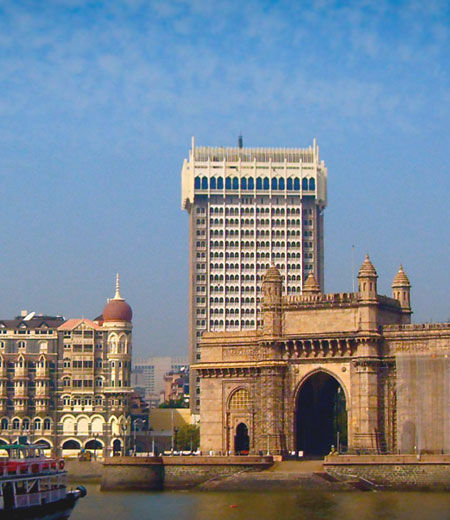

SIGNATURE TOUR TF-3

Duration: 09 N / 10 D (optional : Jaipur as a destination after Jodhpur and before Delhi)
Destinations : Mumbai - Udaipur - Sardargarh - Jodhpur - Delhi Journey Overview:
Encompassing not only some of northern India's best-loved historical sites, but also its diverse natural wonders, this 'highlights' tour showcases the Indian panorama from bustling metropolis to laid back desert luxury. The journey begins in Mumbai, the city that never sleeps! Pulsating, alive, on the move, vibrant, and absolute fun -- this is Mumbai or as it is still frequently referred to -- Bombay. The most modern city in India, it captures the spirit of the changing pace set by liberalization and modernization. Post Mumbai, fly to Udaipur. Set in the Girwa valley, Udaipur - 'the city of lakes' is located in southern Rajasthan. It is one of the most romantic cities in the world with its imposing palaces, old world charm, placid lakes and green gardens. Continue to Devigarh, housed in an 18th-century palace in the village of Delwara. It was the royal residence of the rulers of the Delwara principality, from the middle of the 18th century until the mid-20th century. Travel on to the famed desert city of Jodhpur, Rajasthan's second largest city, dominated by its spectacular Mehrangarh fort. Located in Western Rajasthan, feast your eyes on endless golden sand dunes, camels slowly trekking into the distance and desert landscapes as far as the eye can see; not to forget colorful turbans, imposing moustaches of the local men, and the glittering ghagras (skirts) of the women folk. This magical journey ends in Delhi with its British colonial and Mughal legacy, before you fly on home.
Itinerary Highlights:
Day 01: Arrive in Mumbai, and check in to your preferred hotel.
Day 02: City Sightseeing tour - see the amazing Dhobi Ghat - a mammoth washing place & Private excursion to Elephanta Caves. Overnight in Mumbai.
Day 03: Fly to Udaipur, check into your preferred hotel.
Day 04: Take a most delighting boat ride on the serene Lake Pichhola, and a private tour of the city. Overnight at Udaipur.
Day 05: Drive onto Sardargarh, one of the most romantic fort palaces in Rajasthan. Overnight at Sardargarh.
Day 06: Drive to Jodhpur, and check into your preferred hotel. Post lunch, take a jeep safari to a Bishnoi village. You can even view a private opium ceremony (opium is sacred to the Bishnoi tribe) with prior intimation to us. Overnight in Jodhpur.
Day 07: Browse the local markets in Jodhpur, take a private tour of the spectacular Mehrangarh fort. Have dinner by the pool at a haveli where the mammoth fort seems to be in its backyard. Overnight in Jodhpur.
Day 08: Fly to India’s capital, Delhi, and check into your luxury hotel. You may want to spend the evening just enjoying the property you are staying in!
Day 09: Take a private tour of the New and Old city of Delhi, and jump on a rickshaw for a delightful ride through the markets at Old Delhi
Day 10 : Departure
Where to Stay:
Mumbai: Taj Mahal Palace
Udaipur: Taj Lake Palace / Devigarh by Lebua
Jodhpur: Mihirgarh / Raas Haveli
Delhi: Aman / Oberoi / Taj
Mumbai: Taj Mahal Palace Udaipur: Taj Lake Palace / Devigarh by Lebua Jodhpur: Mihirgarh / Raas Haveli Delhi: Aman / Oberoi / Taj
Inclusions
- Hotel / Rooms Category as per specified or similar. The hotel accommodation is based on two persons sharing one double room with private facilities and daily American buffet breakfast (Some may include further meals)
- Private touring with your own personal guides, air conditioned vehicle (sedan, SUV or Tempo) with Chauffeur.
- Entrance fees at all monuments and museums mentioned in the itinerary
- Child above 2 years and below 11 years without extra bed, breakfast cost to be settled directly by the guest
- Bottled water throughout the tour.
- Around-the-clock support in each destination during your trip
- Rickshaw ride at Old Delhi
- Village Jeep Safari in Jodhpur
- Exclusive Boat ride at Lake Pichola
- Internal flights if any.
Exclusions
- Anything not mentioned under 'Package Inclusions'
- All personal expenses, portages, optional tours and extra meals / snacks
- Camera fees, alcoholic/non-alcoholic beverages
- Tips, laundry and phone calls
- Medical and travel insurance
- Any increase of Govt. taxes at time of operating the tour
- Any expense incurred or loss caused by reasons beyond our control such as bad weather, natural calamities, landslides, floods, flight delays, rescheduling, cancellations, any accidents, medical evacuations, riots/strikes/war, & etc.